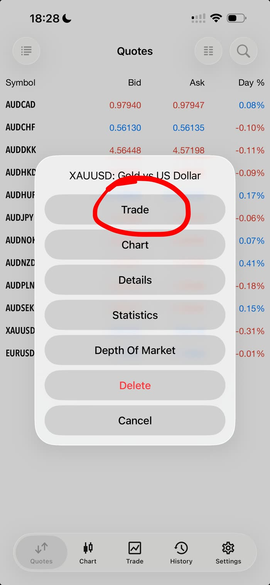
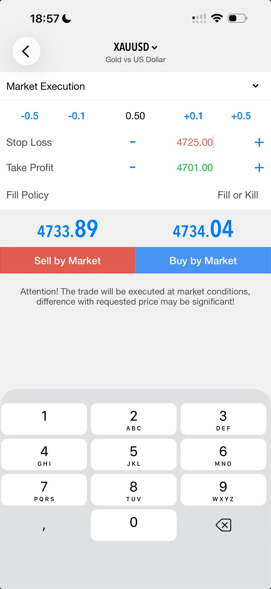
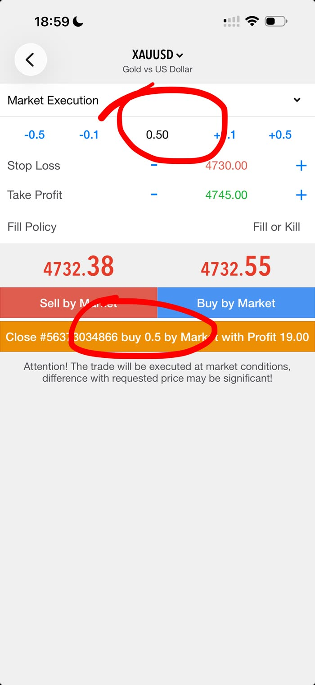
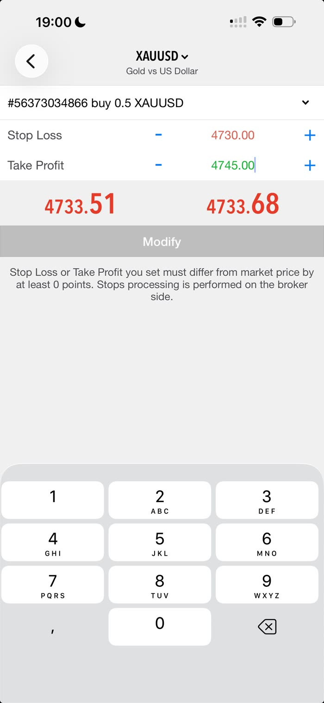

01 · Розбираємо сетап
Що це все означає
У кожному сетапі одні й ті самі параметри. Нічого вигадувати не треба: твоє завдання просто повторити.
XAUUSD
Торгова параXAU = золото, USD = долар. Торгуємо ціну золота в доларах. Так само EURUSD - євро до долара, GBPUSD - фунт до долара.
BUY
Купуємо, чекаємо зростанняЗаробляємо, якщо ціна йде вгору.
SELL
Продаємо, чекаємо падінняЗаробляємо, якщо ціна йде вниз.
Вхід 📍
Точка входуДіапазон ціни, по якій заходимо. Якщо в BUY-сетапі вхід 4170-4172, а ціна вже 4180, ти запізнилась: такий сетап пропускаємо.
SL ❌
Stop Loss - страховкаЯкщо ціна пішла не туди, угода сама закриється з невеликим мінусом. Без стопа можна втратити весь депозит за одну угоду. Ставимо завжди.
TP ▶️
Take Profit - ціліРівні, де фіксуємо прибуток. TP1, TP2, TP3, TP4: чим далі, тим більший профіт. На кожному тейку закривається частина позиції.
БУ
БеззбитокКоли в каналі пишемо «стоп в БУ», переносиш Stop Loss на свою точку входу. Детально нижче.
02 · Відкриваємо угоду
Алгоритм у MetaTrader 5
Торгуємо через додаток MT5 (App Store або Google Play), підключений до твого рахунку. Як встановити і увійти - у гайді «Термінал MT5».
1
Знаходиш актив у котируванняхВідкриваєш розділ Quotes, знаходиш XAUUSD (або пару із сетапу) і натискаєш на неї.

Натискаєш на XAUUSD → обираєш Trade
2
Виставляєш лотОбсяг позиції рахуєш калькулятором у гайді «Ризик-менеджмент». Натискаєш на цифру в центрі і змінюєш. Не бери максимум. 
Лот (обсяг) - цифра в центрі. Ціни на скрині інші, ніж у сетапі вище: це просто приклад інтерфейсу.
3
Вводиш SL і TP із сетапуНатискаєш на поле Stop Loss і вводиш цифру із сетапу. Те саме з Take Profit. Строго як написано, нічого не змінюєш.

Вводиш Stop Loss і Take Profit точно як у сетапі. На скрині вони вже заповнені.
4
Натискаєш Buy by Market або Sell by MarketЗалежно від напрямку сетапу. Все, угода відкрита.

Помаранчева кнопка внизу закриває вже відкриту позицію і з'являється лише тоді, коли вона є. Нова угода відкривається кнопками Sell / Buy by Market.
03 · Закриваємо позицію
Як закрити угоду вручну
Тейки і стоп спрацьовують самі. Але якщо треба вийти раніше або закрити частину позиції:

Розділ Trade → натискаєш на угоду → Close position

Змінити SL або TP - Modify position. Так само переносимо стоп у беззбиток.
Позиції на скринах - для прикладу. Цифри можуть відрізнятися від реального сетапу, тут показана лише механіка.
04 · Розмір лота
Скільки ставити на угоду
Лот - це обсяг позиції. На золоті при лоті 0.01 кожен $1 руху ціни = $1 прибутку або збитку. При лоті 0.1 - вже $10.
Тому лот рахуємо від стопа: спочатку вирішуєш, скільки готова втратити (2-5% депозиту), потім ділиш на відстань до стопа.
| Депозит | Ризик 3% | Лот при стопі $15 |
|---|
| $300 | $9 | 0.01* |
| $500 | $15 | 0.01 |
| $1 000 | $30 | 0.02 |
| $2 000 | $60 | 0.04 |
| $3 000 | $90 | 0.06 |
| $5 000 | $150 | 0.10 |
* 0.01 - мінімальний лот. На $300 ризик буде трохи більший за 3% (~5%).
🧮
Калькулятор лотаВводиш депозит, ризик, вхід і стоп - отримуєш лот
→
Якщо тейків кілька, лот ділиш порівну. Зайшла 0.08 з чотирма тейками → по 0.02 на кожен. Ціна дійшла до TP1 - закрилась чверть позиції, решта йде далі.
05 · Беззбиток
Що означає «стоп в БУ»
Іноді в каналі пишемо: «Переносимо стоп у беззбиток». Ось як це робиться:
💡 Логіка проста
SELL по золоту, вхід 4706, стоп 4725. Ціна взяла TP1 на 4701, перший прибуток уже забрали. Відкриваєш позицію → Modify position → змінюєш Stop Loss з 4725 на 4706 (точку входу). Тепер, навіть якщо ціна розвернеться, ти в нулі. А якщо піде далі - беремо TP2, TP3, TP4.

Натискаєш на угоду → Modify position

Ставиш Stop Loss на ціну входу → Modify. Все, ти в беззбитку.
Simbochka FXSELL XAUUSD 📍 4706-4708 ✅ Take profit 1: 4701 ✅ Take profit 2...
Якщо у вас консервативна торгівля, переносьте стоп лосс по XAUUSD у беззбиток. Якщо ризик-менеджмент дозволяє, тримайте позицію далі.
👁 980 · 11:04
Так виглядає повідомлення в каналі
07 · Запізнилась
Що робити, якщо пропустила вхід
Буває: не дивилась у телефон, а ціна вже пішла. Без паніки.
Ціна пішла в профіт без тебе
Далі ніж на $2-3 від входу - пропускаємо. Стоп стає далеко, ризик більший, а прибуток менший.
Ціна трохи пішла проти
Але ще не дійшла до стопа - можна заходити: ризик навіть менший, ніж у сетапі.
Пропущений сетап - це не втрата. Втрата - це стрибнути в потяг, що вже поїхав, і вийти в мінус. Сетапи приходять щодня.
Все зрозуміло - що далі? 🤝
У ком'юніті ми з командою щодня даємо сетапи в реальному часі, пояснюємо кожен вхід і супроводжуємо угоду до закриття.
Приєднатися через @simba_fx_bot